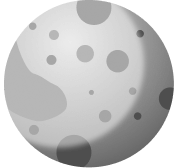
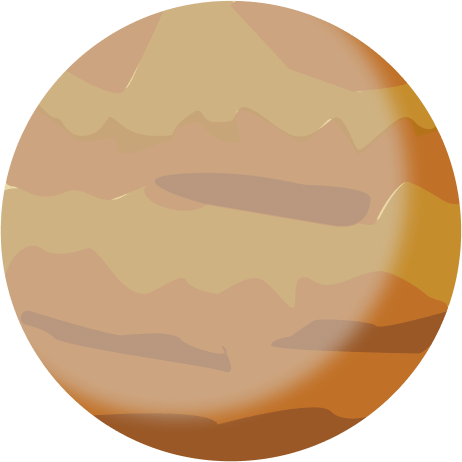
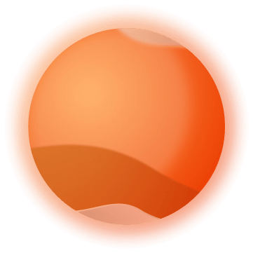
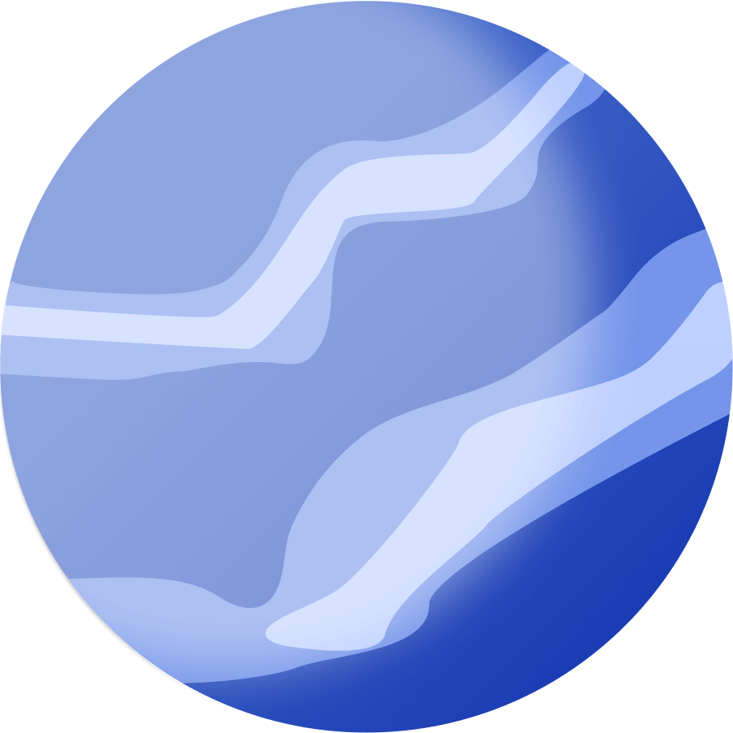

<!DOCTYPE html><html lang="en"><head><meta charset="UTF-8"><meta name="description" content="Astro description"><meta name="viewport" content="width=device-width"><link rel="icon" type="image/svg+xml" href="/favicon.svg"><script defer src="https://cdn.jsdelivr.net/npm/alpinejs@3.x.x/dist/cdn.min.js"></script><style>@import"https://fonts.googleapis.com/css2?family=Inconsolata:wght@200;500&display=swap";html{height:100%;display:flex;align-items:center}body{height:100%;width:100%;background-image:url(/SpaceProject/_astro/backgroundsStars.75b6a630.jpg);background-repeat:no-repeat;background-size:cover;overflow:hidden;color:#fff}.button{text-decoration:none}h2{font-style:normal;font-family:spaceProject;text-transform:uppercase}p{font-family:Inconsolata,monospace;line-height:2}@font-face{font-family:spaceProject;src:url(/SpaceProject/_astro/projectSpace.08fecae4.otf)}
.planetStructure[data-astro-cid-3ofeocpa]{display:flex;flex-direction:row;align-items:center;justify-content:center;column-gap:40px;margin:64px}.planetInfo[data-astro-cid-3ofeocpa]{font-family:sans-serif;width:40%;height:500px;overflow-y:auto;overflow-x:hidden;border-radius:30px;border:2px solid #FFF;background:linear-gradient(293deg,rgba(255,255,255,.2) 0%,rgba(0,0,0,0) 0%);padding:32px;backdrop-filter:blur(5px)}.planet[data-astro-cid-3ofeocpa]{width:30%}h2[data-astro-cid-3ofeocpa]{font-style:normal;font-family:spaceProject;text-transform:uppercase}
.planetStructure[data-astro-cid-ceoulr4j]{display:flex;flex-direction:row;align-items:center;justify-content:center;column-gap:40px;margin:64px}.planetInfo[data-astro-cid-ceoulr4j]{font-family:sans-serif;width:40%;border-radius:30px;border:2px solid #FFF;background:linear-gradient(293deg,rgba(255,255,255,.2) 0%,rgba(0,0,0,0) 0%);padding:32px;backdrop-filter:blur(5px)}.planet[data-astro-cid-ceoulr4j]{width:30%}h2[data-astro-cid-ceoulr4j]{font-style:normal;font-family:spaceProject;text-transform:uppercase}
.planetStructure[data-astro-cid-442fb5il]{display:flex;flex-direction:row;align-items:center;justify-content:center;column-gap:40px;margin:64px}.planetInfo[data-astro-cid-442fb5il]{font-family:sans-serif;width:40%;border-radius:30px;border:2px solid #FFF;background:linear-gradient(293deg,rgba(255,255,255,.2) 0%,rgba(0,0,0,0) 0%);padding:32px;backdrop-filter:blur(5px)}.planet[data-astro-cid-442fb5il]{width:30%}h2[data-astro-cid-442fb5il]{font-style:normal;font-family:spaceProject;text-transform:uppercase}
.planetStructure[data-astro-cid-rbxffohz]{display:flex;flex-direction:row;align-items:center;justify-content:center;column-gap:40px;margin:64px}.planetInfo[data-astro-cid-rbxffohz]{font-family:sans-serif;width:40%;height:500px;overflow-y:auto;overflow-x:hidden;border-radius:30px;border:2px solid #FFF;background:linear-gradient(293deg,rgba(255,255,255,.2) 0%,rgba(0,0,0,0) 0%);padding:32px;backdrop-filter:blur(5px)}.planet[data-astro-cid-rbxffohz]{width:30%}h2[data-astro-cid-rbxffohz]{font-style:normal;font-family:spaceProject;text-transform:uppercase}
.planetStructure[data-astro-cid-suxzzx7x]{display:flex;flex-direction:row;align-items:center;justify-content:center;column-gap:40px;margin:64px}.planetInfo[data-astro-cid-suxzzx7x]{font-family:sans-serif;width:40%;border-radius:30px;border:2px solid #FFF;background:linear-gradient(293deg,rgba(255,255,255,.2) 0%,rgba(0,0,0,0) 0%);padding:32px;backdrop-filter:blur(5px)}.planet[data-astro-cid-suxzzx7x]{width:30%}h2[data-astro-cid-suxzzx7x]{font-style:normal;font-family:spaceProject;text-transform:uppercase}
.planetStructure[data-astro-cid-f3crxxgi]{display:flex;flex-direction:row;align-items:center;justify-content:center;column-gap:40px;margin:64px}.planetInfo[data-astro-cid-f3crxxgi]{font-family:sans-serif;width:40%;height:500px;overflow-y:auto;overflow-x:hidden;border-radius:30px;border:2px solid #FFF;background:linear-gradient(293deg,rgba(255,255,255,.2) 0%,rgba(0,0,0,0) 0%);padding:32px;backdrop-filter:blur(5px)}.planet[data-astro-cid-f3crxxgi]{width:30%}h2[data-astro-cid-f3crxxgi]{font-style:normal;font-family:spaceProject;text-transform:uppercase}
.planetStructure[data-astro-cid-mt6hnomu]{display:flex;flex-direction:row;align-items:center;justify-content:center;column-gap:40px;margin:64px}.planetInfo[data-astro-cid-mt6hnomu]{font-family:sans-serif;width:40%;border-radius:30px;border:2px solid #FFF;background:linear-gradient(293deg,rgba(255,255,255,.2) 0%,rgba(0,0,0,0) 0%);padding:32px;backdrop-filter:blur(5px)}.planet[data-astro-cid-mt6hnomu]{width:30%}h2[data-astro-cid-mt6hnomu]{font-style:normal;font-family:spaceProject;text-transform:uppercase}
.planetStructure[data-astro-cid-55wzw2s3]{display:flex;flex-direction:row;align-items:center;justify-content:center;column-gap:40px;margin:64px}.planetInfo[data-astro-cid-55wzw2s3]{font-family:sans-serif;width:40%;border-radius:30px;border:2px solid #FFF;background:linear-gradient(293deg,rgba(255,255,255,.2) 0%,rgba(0,0,0,0) 0%);padding:32px;backdrop-filter:blur(5px)}.planet[data-astro-cid-55wzw2s3]{width:30%}h2[data-astro-cid-55wzw2s3]{font-style:normal;font-family:spaceProject;text-transform:uppercase}
.rotate-0[data-astro-cid-yugg7g2i]{transform:rotate(0)}.rotate-1[data-astro-cid-yugg7g2i]{transform:rotate(120deg)}.rotate-2[data-astro-cid-yugg7g2i]{transform:rotate(280deg)}.rotate-3[data-astro-cid-yugg7g2i]{transform:rotate(360deg)}.rotate-4[data-astro-cid-yugg7g2i]{transform:rotate(240deg)}.rotate-5[data-astro-cid-yugg7g2i]{transform:rotate(300deg)}.rotate-6[data-astro-cid-yugg7g2i]{transform:rotate(360deg)}.rotate-7[data-astro-cid-yugg7g2i]{transform:rotate(420deg)}.menu[data-astro-cid-yugg7g2i]{display:flex;align-items:center;justify-content:center;gap:16px;margin-top:32px;position:absolute;z-index:1;left:50%;bottom:44px;transform:translate(-50%)}.menu[data-astro-cid-yugg7g2i] span[data-astro-cid-yugg7g2i]{cursor:pointer}.rocket[data-astro-cid-yugg7g2i]{position:absolute;width:40px;top:-54px;transition:all 1s ease-out}img[data-astro-cid-yugg7g2i]{width:40px}.soleilMenu[data-astro-cid-yugg7g2i]{position:absolute;z-index:1;left:30vw;bottom:0;transform:translateY(14%)}.soleil[data-astro-cid-yugg7g2i]{width:200px}.saturne[data-astro-cid-yugg7g2i]{width:70px;margin:-16px}.carouselPlanet[data-astro-cid-yugg7g2i]{display:flex;justify-content:center;align-items:center;position:absolute;top:0;height:100vh;width:100vw;z-index:0}.spationaute[data-astro-cid-yugg7g2i]{width:150px;position:absolute;left:100px;bottom:150px;animation:rotate-scale-up 15s ease-in-out infinite}@keyframes rotate-scale-up{0%{-webkit-transform:scale(1) rotateZ(0);transform:scale(1) rotate(0)}50%{-webkit-transform:scale(1.2) rotateZ(45deg);transform:scale(1.2) rotate(45deg)}to{-webkit-transform:scale(1) rotateZ(0deg);transform:scale(1) rotate(0)}}
</style><script type="module">document.addEventListener("DOMContentLoaded",function(){const e=document.querySelectorAll(".tab-control");e.forEach((t,o)=>{t.addEventListener("click",()=>{const i=t.getAttribute("data-tab-id"),a=window.location.href.split("#")[0]+"#"+i;window.history.replaceState({},"",a)})});const n=window.location.href.split("#")[1];n&&e.forEach((t,o)=>{t.getAttribute("data-tab-id")===n&&t.click()})});
</script></head><body></body></html><div x-data="{ activeTab:  0 }" data-astro-cid-yugg7g2i><div class="carouselPlanet" data-astro-cid-yugg7g2i><div :class="{ 'active': activeTab === 0 }" x-show.transition.in.opacity.duration.600="activeTab === 0" id="mercury" data-astro-cid-yugg7g2i><div class="planetStructure" data-astro-cid-442fb5il><div class="planetInfo" data-astro-cid-442fb5il><h2 data-astro-cid-442fb5il>Mercure</h2><ul data-astro-cid-442fb5il><li data-astro-cid-442fb5il><p data-astro-cid-442fb5il>Diamètre moyen : 4 879 km</p></li><li data-astro-cid-442fb5il><p data-astro-cid-442fb5il>Masse (Terre = 1) : 0,055 soit 3,3.1020 t</p></li><li data-astro-cid-442fb5il><p data-astro-cid-442fb5il>Masse volumique moyenne : 5427 kg/m3</p></li><p data-astro-cid-442fb5il><b data-astro-cid-442fb5il>Composition:</b> Mercure possède un noyau métallique solide qui représente environ 42% de son diamètre total. Ce noyau est principalement composé de fer et de nickel.
                Le manteau de Mercure est situé au-dessus du noyau et est principalement composé de silicates. Il représente environ 58% du diamètre de la planète.
                La croûte de Mercure est la couche extérieure de la planète et est composée principalement de roches silicatées. Elle est beaucoup plus fine que la croûte terrestre.
</p></ul><p data-astro-cid-442fb5il></p></div></div></div><div :class="{ 'active': activeTab === 1 }" x-show.transition.in.opacity.duration.600="activeTab === 1" id="venus" data-astro-cid-yugg7g2i><div class="planetStructure" data-astro-cid-55wzw2s3><div class="planetInfo" data-astro-cid-55wzw2s3><h2 data-astro-cid-55wzw2s3>Venus</h2><ul data-astro-cid-55wzw2s3><li data-astro-cid-55wzw2s3><p data-astro-cid-55wzw2s3>Diamètre moyen : 12 104 km</p></li><li data-astro-cid-55wzw2s3><p data-astro-cid-55wzw2s3>Masse (Terre = 1) 0,82 soit 4,8.1021 t</p></li><li data-astro-cid-55wzw2s3><p data-astro-cid-55wzw2s3>Masse volumique moyenne : 5 243 kg/m3</p></li><p data-astro-cid-55wzw2s3><b data-astro-cid-55wzw2s3>Composition:</b> Vénus possède un noyau métallique solide qui est principalement composé de fer et de nickel. Cependant, la taille exacte de son noyau n'est pas précisément connue.
                Le manteau de Vénus est situé au-dessus du noyau et est principalement composé de roches silicatées. Il représente une grande partie de la masse de la planète.
                La croûte de Vénus est la couche extérieure de la planète, et elle est également composée de roches silicatées. La croûte de Vénus est assez épaisse par rapport à la Terre.
</p></ul></div></div></div><div :class="{ 'active': activeTab === 2 }" x-show.transition.in.opacity.duration.600="activeTab === 2" id="terre" data-astro-cid-yugg7g2i><div class="planetStructure" data-astro-cid-f3crxxgi><div class="planetInfo" data-astro-cid-f3crxxgi><h2 data-astro-cid-f3crxxgi>Terre</h2><ul data-astro-cid-f3crxxgi><li data-astro-cid-f3crxxgi><p data-astro-cid-f3crxxgi>Diamètre moyen : 12 756 km</p></li><li data-astro-cid-f3crxxgi><p data-astro-cid-f3crxxgi>Masse (Terre = 1) 5,9.1021 t</p></li><li data-astro-cid-f3crxxgi><p data-astro-cid-f3crxxgi>Masse volumique moyenne : 5 515 kg/m3</p></li><p data-astro-cid-f3crxxgi><b data-astro-cid-f3crxxgi>Composition:</b>Le noyau interne de la Terre est une sphère solide composée principalement de fer et de nickel. Les températures dans cette région sont extrêmement élevées en raison de la pression énorme de la Terre, et le noyau interne est essentiellement solide en raison de ces températures élevées malgré la composition métallique.
                Noyau externe : Situé juste au-dessus du noyau interne, le noyau externe est principalement liquide et est également composé de fer et de nickel. Les mouvements de convection dans le noyau externe liquide génèrent le champ magnétique terrestre.
               Le manteau terrestre est une couche épaisse de roches silicatées située au-dessus du noyau externe. Il représente la plus grande partie du volume de la Terre. Le manteau est principalement composé de silicates, notamment de minéraux riches en fer et en magnésium, et il est partiellement fondu à des profondeurs plus profondes, formant ainsi le manteau supérieur solide et le manteau inférieur partiellement fondu.
               La croûte terrestre est la couche la plus externe de la planète. Elle est composée de roches silicatées, principalement de basalte (dans la croûte océanique) et de granit (dans la croûte continentale). La croûte continentale est plus épaisse et moins dense que la croûte océanique
</p></ul></div></div></div><div :class="{ 'active': activeTab === 3 }" x-show.transition.in.opacity.duration.600="activeTab === 3" id="mars" data-astro-cid-yugg7g2i><div class="planetStructure" data-astro-cid-ceoulr4j><div class="planetInfo" data-astro-cid-ceoulr4j><h2 data-astro-cid-ceoulr4j>Mars</h2><ul data-astro-cid-ceoulr4j><li data-astro-cid-ceoulr4j><p data-astro-cid-ceoulr4j>Diamètre moyen : 6 794 km</p></li><li data-astro-cid-ceoulr4j><p data-astro-cid-ceoulr4j>Masse (Terre = 1) 0,11 soit 0,642.1021 t</p></li><li data-astro-cid-ceoulr4j><p data-astro-cid-ceoulr4j>Masse volumique moyenne : 3 933 kg/m</p></li><p data-astro-cid-ceoulr4j><b data-astro-cid-ceoulr4j>Composition:</b>Le manteau serait principalement composé d'olivine et de pyroxènes, des minéraux riches en fer et en magnésium. La croûte forme une enveloppe, composée de roches volcaniques.
</p></ul></div></div></div><div :class="{ 'active': activeTab === 4 }" x-show.transition.in.opacity.duration.600="activeTab === 4" id="jupiter" data-astro-cid-yugg7g2i><div class="planetStructure" data-astro-cid-3ofeocpa><div class="planetInfo" data-astro-cid-3ofeocpa><h2 data-astro-cid-3ofeocpa>Jupiter</h2><ul data-astro-cid-3ofeocpa><li data-astro-cid-3ofeocpa><p data-astro-cid-3ofeocpa>Diamètre moyen : 142 984 km</p></li><li data-astro-cid-3ofeocpa><p data-astro-cid-3ofeocpa>Masse (Terre = 1) 318, soit 1 898,6.1021 t</p></li><li data-astro-cid-3ofeocpa><p data-astro-cid-3ofeocpa>Masse volumique moyenne : 1 326 kg/m3</p></li><p data-astro-cid-3ofeocpa><b data-astro-cid-3ofeocpa>Composition:</b>Bien que Jupiter n'ait pas de surface solide, il est généralement supposé avoir un noyau rocheux ou métallique solide au centre, mais la taille et la composition exactes de ce noyau restent en grande partie inconnues. Il est possible que le noyau soit entouré d'une couche d'hydrogène et d'hélium métallique sous des pressions et des températures extrêmement élevées.
                Au-dessus de la couche d'hydrogène et d'hélium, Jupiter a une épaisse enveloppe de gaz qui s'étend vers l'extérieur depuis l'atmosphère supérieure.

               
                Jupiter est une planète géante gazeuse, ce qui signifie qu'elle n'a pas de surface solide et est principalement composée de gaz et d'hydrogène. Sa composition est la suivante :
                L'atmosphère de Jupiter est composée principalement d'hydrogène (environ 75%) et d'hélium (environ 24%). Il contient également de petites quantités d'autres gaz, notamment des composés d'hydrocarbures, de l'ammoniac et de la vapeur d'eau. L'atmosphère de Jupiter est épaisse et turbulente, avec des bandes nuageuses distinctes et des tempêtes massives, dont la Grande Tache Rouge est la plus célèbre.
</p></ul></div></div></div><div :class="{ 'active': activeTab === 5 }" x-show.transition.in.opacity.duration.600="activeTab === 5" id="saturne" data-astro-cid-yugg7g2i><div class="planetStructure" data-astro-cid-suxzzx7x><div class="planetInfo" data-astro-cid-suxzzx7x><h2 data-astro-cid-suxzzx7x>Saturne</h2><ul data-astro-cid-suxzzx7x><li data-astro-cid-suxzzx7x><p data-astro-cid-suxzzx7x>Diamètre moyen : 120 536 km</p></li><li data-astro-cid-suxzzx7x><p data-astro-cid-suxzzx7x>Masse (Terre = 1) 95,2 soit 568,4.1021 t</p></li><li data-astro-cid-suxzzx7x>Masse volumique moyenne : 687 kg/m3</li><p data-astro-cid-suxzzx7x><b data-astro-cid-suxzzx7x>Composition:</b> Elle est principalement composée de 2 gaz et ne possède pas de véritable surface solide : en volume, 96 % d’hydrogène (H2), 3 % d’hélium (He), et 1 % d’autres éléments. Sa densité est très faible, à tel point qu’elle pourrait flotter si elle était plongée dans l’eau.
</p></ul></div></div></div><div :class="{ 'active': activeTab === 6 }" x-show.transition.in.opacity.duration.600="activeTab === 6" id="uranus" data-astro-cid-yugg7g2i><div class="planetStructure" data-astro-cid-mt6hnomu><div class="planetInfo" data-astro-cid-mt6hnomu><h2 data-astro-cid-mt6hnomu>Uranus</h2><ul data-astro-cid-mt6hnomu><li data-astro-cid-mt6hnomu><p data-astro-cid-mt6hnomu>Diamètre moyen : 51 118 km</p></li><li data-astro-cid-mt6hnomu><p data-astro-cid-mt6hnomu>Masse (Terre = 1) 14,5 soit 86,8.1021 t</p></li><li data-astro-cid-mt6hnomu><p data-astro-cid-mt6hnomu>Masse volumique moyenne : 1 270 kg/m3</p></li><p data-astro-cid-mt6hnomu><b data-astro-cid-mt6hnomu>Composition:</b> Elle fait partie des 4 planètes géantes, mais entre dans la sous-catégorie des géantes glacées avec Neptune. Son atmosphère est composée principalement d’hydrogène (83 %) et d’hélium (15 %), puis vient le méthane (2 %) et l’ammoniac (0,001 %).
</p></ul></div></div></div><div :class="{ 'active': activeTab === 7 }" x-show.transition.in.opacity.duration.600="activeTab === 7" id="neptune" data-astro-cid-yugg7g2i><div class="planetStructure" data-astro-cid-rbxffohz><div class="planetInfo" data-astro-cid-rbxffohz><h2 data-astro-cid-rbxffohz>Neptune</h2><ul data-astro-cid-rbxffohz><li data-astro-cid-rbxffohz><p data-astro-cid-rbxffohz>Diamètre moyen : 49 244 km</p></li><li data-astro-cid-rbxffohz><p data-astro-cid-rbxffohz>Masse (Terre = 1) 17,1 soit 1,24.1023 t</p></li><li data-astro-cid-rbxffohz><p data-astro-cid-rbxffohz>Masse volumique moyenne : 1 638 kg/m3</p></li><p data-astro-cid-rbxffohz><b data-astro-cid-rbxffohz>Composition:</b> L'atmosphère de Neptune est principalement composée d'hydrogène (environ 80%) et d'hélium (environ 19%). Cependant, Neptune se distingue par la présence d'autres gaz et composés, notamment du méthane, de l'ammoniac et de l'eau, qui confèrent à son atmosphère sa couleur caractéristique de bleu profond.
                Manteau et noyau : Sous l'atmosphère gazeuse, Neptune possède un manteau et un noyau. Le manteau est principalement composé de glace d'eau, d'ammoniac et de méthane. Le noyau est probablement composé de roches et de métaux, bien que sa composition exacte reste incertaine.
</p></ul></div></div></div></div><a href="/SolarSystem" class="soleilMenu" data-astro-cid-yugg7g2i></a><div class="menu" data-astro-cid-yugg7g2i><span @click="activeTab = 0" class="tab-control" data-tab-id="mercury" :class="{ 'active': activeTab === 0 }" data-astro-cid-yugg7g2i></span><span @click="activeTab = 1" class="tab-control" data-tab-id="venus" :class="{ 'active': activeTab === 1 }" data-astro-cid-yugg7g2i></span><span @click="activeTab = 2" class="tab-control" data-tab-id="terre" :class="{ 'active': activeTab === 2 }" data-astro-cid-yugg7g2i></span><span @click="activeTab = 3" class="tab-control" data-tab-id="mars" :class="{ 'active': activeTab === 3 }" data-astro-cid-yugg7g2i></span><span @click="activeTab = 4" class="tab-control" data-tab-id="jupiter" :class="{ 'active': activeTab === 4 }" data-astro-cid-yugg7g2i></span><span @click="activeTab = 5" class="tab-control" data-tab-id="saturne" :class="{ 'active': activeTab === 5 }" data-astro-cid-yugg7g2i></span><span @click="activeTab = 6" class="tab-control" data-tab-id="uranus" :class="{ 'active': activeTab === 6 }" data-astro-cid-yugg7g2i></span><span @click="activeTab = 7" class="tab-control" data-tab-id="neptune" :class="{ 'active': activeTab === 7 }" data-astro-cid-yugg7g2i></span><div x-ref="rocket" class="rocket" :class="'rotate-' + activeTab" :style="'left: ' + (activeTab * 54) + 'px'" data-astro-cid-yugg7g2i></div></div></div>